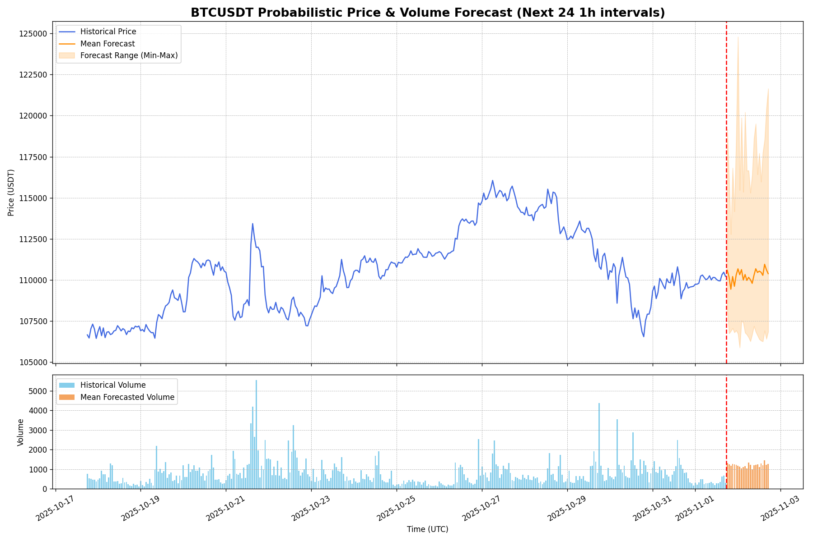
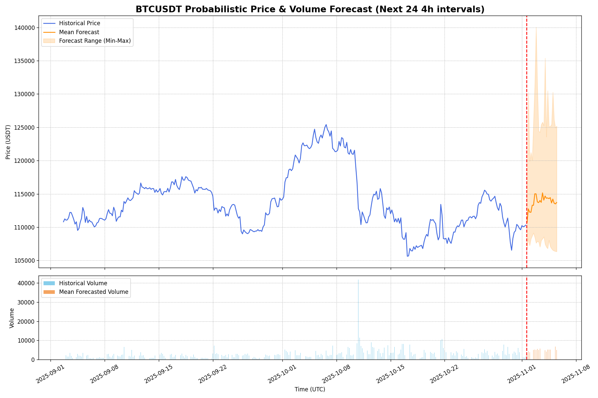
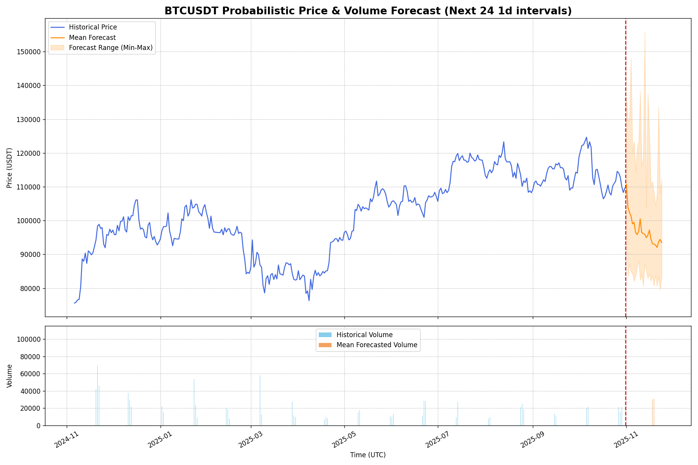

Kronos Live BTC/USDT 预测仪表板
中文
EN
最后更新时间:
2025-12-26 18:09:16
数据来源:
Binance
刷新数据
1小时
4小时
1天
上涨概率
50.0%
未来24小时BTC/USDT价格上涨的概率
波动性放大
13.3%
未来24小时波动性放大的概率
24小时概率预测图表
基于1小时K线数据的Kronos模型预测结果

上涨概率
40.0%
未来24个间隔BTC/USDT价格上涨的概率
波动性放大
23.3%
未来24个间隔波动性放大的概率
24间隔概率预测图表
基于4小时K线数据的Kronos模型预测结果

上涨概率
6.7%
未来24个间隔BTC/USDT价格上涨的概率
波动性放大
96.7%
未来24个间隔波动性放大的概率
24间隔概率预测图表
基于1天K线数据的Kronos模型预测结果

方法论概述
此演示展示了
Kronos
的预测结果，这是一个在金融市场"语言"上预训练的基础模型。预测使用以下过程生成：
模型：
使用Kronos-mini（4M参数）模型自回归预测未来K线数据。
数据上下文：
模型使用来自Binance的最近360小时（约15天）BTC/USDT 1小时K线数据作为每次新预测的上下文。
概率预测：
我们采用蒙特卡罗采样（N=30路径）生成可能的未来价格轨迹分布，而不仅仅是单点预测。
衍生洞察：
分析结果分布以产生平均预测（实线）、不确定性范围（阴影区域）和上述关键概率指标。
关于Kronos项目
Kronos是首个开源的金融K线基础模型，在来自45个以上全球交易所的数据上训练。它被设计为服务于多样化量化金融任务的统一模型。
在GitHub上查看
阅读论文